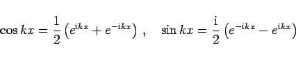
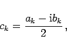
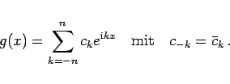

Inhalt Index DeskTop Bronstein

 Numerische Mathematik Approximation, Ausgleichsrechnung, Harmonische Analyse Harmonische Analyse Schnelle Fourier-Transformation (FFT)
Numerische Mathematik Approximation, Ausgleichsrechnung, Harmonische Analyse Harmonische Analyse Schnelle Fourier-Transformation (FFT)


Um das Prinzip der FFT möglichst einfach beschreiben zu können, bringt man die FOURIER-Summe (19.207) mit Hilfe der Formeln
|  | (19.216) |
auf die komplexe Form
Setzt man
|  | (19.218a) |
dann gilt wegen (19.208)
und (19.217) geht in die komplexe Darstellung der FOURIER-Summe über:
|  | (19.219) |
Sind die komplexen Koeffizienten ck ermittelt worden, dann erhält man daraus die gesuchten reellen FOURIER-Koeffizienten auf folgende einfache Weise: